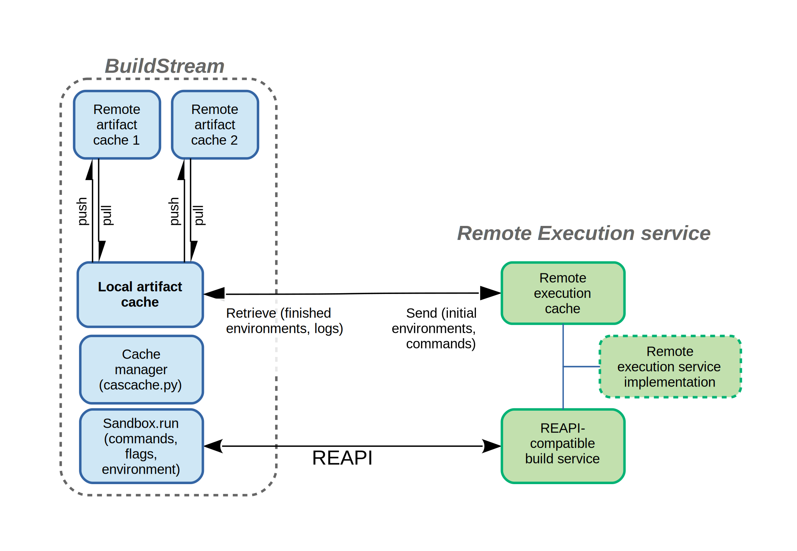

Remote execution
Remote execution allows builds to take place on different machines from the machine bst is run on, allowing faster builds, shared resources and different build capabilities, for example different machine architectures.
Sandbox extension
The previous section Sandboxing describes the two forms of local sandbox: the bubblewrap sandbox and the less common chroot sandbox (which is used on non-Linux POSIX environments). Remote execution uses a third type, the remote sandbox, which functions similarly to the local sandbox types, but is responsible for causing the build to occur on a remote system. Remote sandboxes should produce the same result as local sandboxes.
Artifact caches and other storage
BuildStream can transmit the results of local builds to remote artifact caches and retrieve them later. The same mechanism is used for remote execution. The filesystem staged before building is stored in a local content-addressable store, which may be the same as the local artifact cache. The command to execute is also stored as an object in local CAS. Both the initial source filesystem and command are transmitted to remote storage specific to the remote execution service, and after the build is complete, the filesystem after build is retrieved from remote storage to the local CAS. The remote execution service uses the same communication protocol as artifact caches, and may use the same internal storage, but may not implement the Remote Asset API used by BuildStream to store full artifacts.
After sending the prerequisite file system and command to the remote execution cache, BuildStream uses the Remote Execution API (REAPI) [1] to signal to the build server that it should perform a build. How the build service does this is not BuildStream’s concern, but typically there will be a worker that will be assigned the work, retrieve the inputs of the build from CAS, carry out the build, and store the results in CAS. The remote execution service is entitled to return a cached result, if the filesystem and command have already been executed.
BuildStream will continue to poll the remote execution server until the build is completed or lost. If it’s completed (successfully or otherwise) the resulting objects (typically the finished file system and logs of stdout and stderr) will be pulled to the local cache. BuildStream will retry jobs that are lost by the remote build server or which complete with certain error types.
sandboxremote.py contains all the communication with the remote execution API.
After a successful build, BuildStream will push the completed artifact to the remote artifact servers as if it had built it locally.
Use of sandboxes outside builds
Because staging requires integration-commands to be run, a sandbox is necessary for the bst artifact checkout command to run.
A sandbox is also required for the bst shell command. Because the REAPI does not provide any mechanism for interactive use, bst shell will always use a local sandbox.